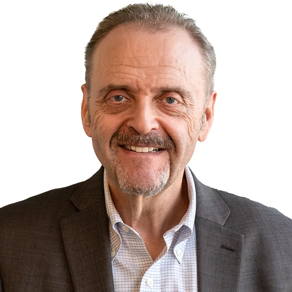
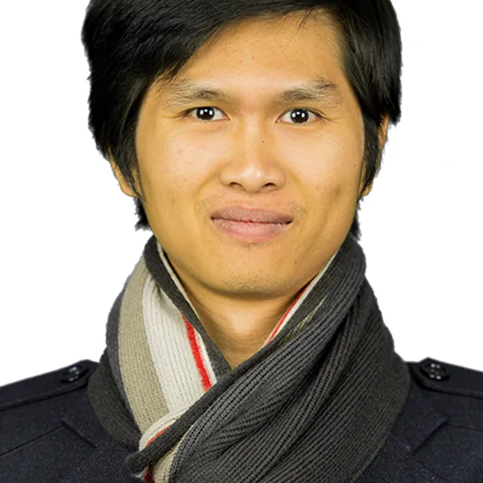

Directory

James GellerProfessorMedical InformaticsSemantic WebOntologiesMedical Terminologies
Hai PhanAssociate ProfessorPrivacy and SecurityData MiningMachine learningSocial NetworkUsman RoshanAssociate ProfessorMachine learningDeep LearningMedical AIBioinformaticsFaculty whose annual citations grew over their five most recent complete years (the current year is excluded — it is still accruing). Citations lag research by 2–5 years, and faculty with large established citation bases naturally show flatter recent growth — this highlights recent momentum, not overall impact or research quality.
Yingcong LiAssistant Professor2021–2025+118%/yrmomentum394recent/yrShuai ZhangAssistant Professor2021–2025+56%/yrmomentum245recent/yrThanh NguyenAssistant Professor2021–2025+52%/yrmomentum177recent/yrMengjia XuAssistant Professor2021–2025+36%/yrmomentum316recent/yrLijing WangAssistant Professor2021–2025+19%/yrmomentum350recent/yrAritra DasguptaAssociate Professor2021–2025+13%/yrmomentum229recent/yrHai PhanAssociate Professor2021–2025+8%/yrmomentum357recent/yrChase WuProfessor2021–2025+7%/yrmomentum560recent/yrLingxiao WangAssistant Professor2021–2025+5%/yrmomentum477recent/yrCitation counts support, they don’t replace, judgment.
No faculty match “”.